- 14 days
- No car: trains, ferries, buses, Ubers
- Two of us, rooms shared
- Plan estimate £2,475–3,740 pp
Ad: some booking links on this page are, or will be, affiliate links. If you book through them I may earn a small commission, at no extra cost to you. I only link to places and trips I actually used and paid for myself, and I say plainly when something wasn't worth it.
Part of my 11 weeks on Australia's east coast and Tasmania. This page covers the far north of the trip only: Magnetic Island, Mission Beach, Cairns and Port Douglas. Each region works as a block on its own, so you can do just this one or link it to others.
Days to allow
I took 14 days, from 12 May (train from Proserpine, ferry to Magnetic Island) to 25 May (evening flight from Cairns to Sydney). That's 13 nights in four places: 2 on Magnetic Island, 2 at Mission Beach, 4 in Cairns and 5 in Port Douglas.
There was something booked on almost every day, and the weather took out one of them. Two travel days went badly because of rail strikes, so leave slack around the train.
Rich to update: was 14 days right, or would you allow more or fewer?
The route at a glance
Proserpine → Townsville (train) → Magnetic Island (ferry) → Townsville (ferry) → Tully and Mission Beach → Tully River (rafting) → Cairns → Port Douglas → Cairns Airport.
I did this whole stretch without a hire car: trains, ferries, buses, taxis, tour pickups and Ubers. That worked, but only just. Queensland rail strikes hit both of my train days, and on Magnetic Island there were no taxis and the bus was full when we arrived.
What it really cost
I did this region with my travel companion, so the rooms were shared between two. Tours are per person unless I say "total". Figures are GBP per person where the plan gives them; where the source only has Australian dollars, I've shown AUD and said so. I haven't converted the AUD figures.
| Per person | |
|---|---|
| Places to stay, Magnetic Island and Mission Beach (4 nights) | A$261 paid (my half of A$522 for the two rooms), plus a cash surcharge on Magnetic Island |
| Places to stay, Cairns and Port Douglas (9 nights) | Rich to update |
| Day costs (the plan's daily estimates) | about £2,475–3,740 for the 14 days, adding up my daily estimates from the plan |
| Flight out (Cairns → Sydney, Qantas) | Rich to update |
| Total | Rich to update |
What I actually paid, where I know it
AUD unless marked.
- Train, Proserpine → Townsville: A$33 paid for the two of us (A$16.50 each). The RailBus to Proserpine was about £17 per person, paid.
- Magnetic Island Discovery Tour (snorkel and paddleboard): about US$108 per person, paid (booked in US dollars).
- Reef & Island Tour (Beaver Reef and Dunk Island): A$199 per person, paid. It was cancelled because of the weather.
- Tully River rafting, full day with lunch: A$280 per person, paid.
- Tony's Tropical Tours (Daintree and Mossman Gorge): A$516.73 total, paid.
- ATV Adventure Co buggy tour: A$462.52 total, paid.
- Silversonic outer reef trip: A$984.55 total, paid.
Rich to update: what you paid for the Green Island trip, the Kuranda tour, the Silverswift dive trip, canyoning, the Wildlife Habitat, the sunset sail, the Abbott and the Port Douglas Motel, and the flight to Sydney. Were the Tony's, ATV and Silversonic totals for the two of you? Did you get a refund for the cancelled Dunk Island trip? And do the plan's daily estimates include the rooms?
Without family or free stays: there were no family or free stays in this region. I paid for every night, so your costs should be close to mine. The rooms were shared between two of us, so if you travel alone you'd pay the whole room price, which roughly doubles the room line. Tours are priced per person, so they don't change much either way.
Day by day
Day 1 · 12 MayProserpine to Magnetic Island
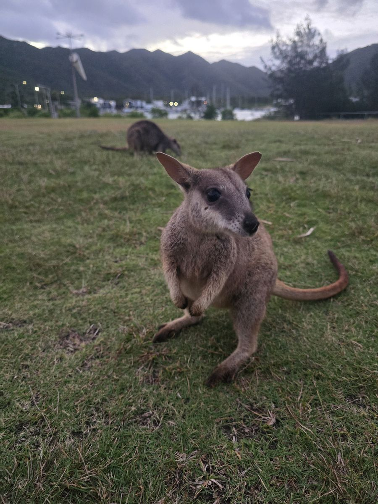
The plan was an early bus to the station, the train to Townsville, then the ferry. Industrial action meant the trains were delayed, which meant the bus didn't work, so we had to cancel our Uber and pay a penalty. That happened twice. We finally got on the train 3 hours late, then had an easy 4-hour ride to Townsville. I booked a taxi to the wrong ferry terminal, but after a bumpy crossing we made it to the island.
There were no taxis and the bus was full, so we walked 25 minutes with all the bags. One suitcase wheel broke almost straight away. I ended up carrying half the bags, dropping them off, then going back for the rest, sweating like mad.
The vintage caravan I'd booked at Vintage Coral Green was nice, the evening meal was lush, and we went to see the rock-wallabies, which was cute.
Tip: on Magnetic Island, don't count on a taxi or a seat on the bus when the ferry comes in. Pack so you can walk with your bags.
Day 2 · 13 MayMagnetic Island
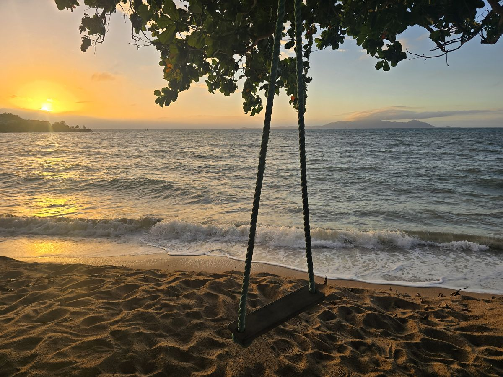
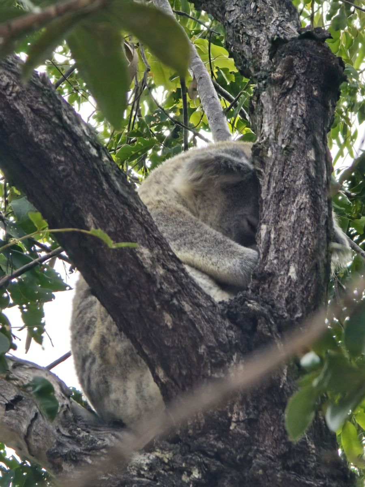
Koalas, rock-wallabies and 26,000 steps.
I had booked the Magnetic Island Discovery Tour (snorkel and paddleboard) for this morning. Viator (link coming)
Rich to update: which walk did you do, and did the Discovery Tour go ahead?
Day 3 · 14 MayMagnetic Island to Mission Beach
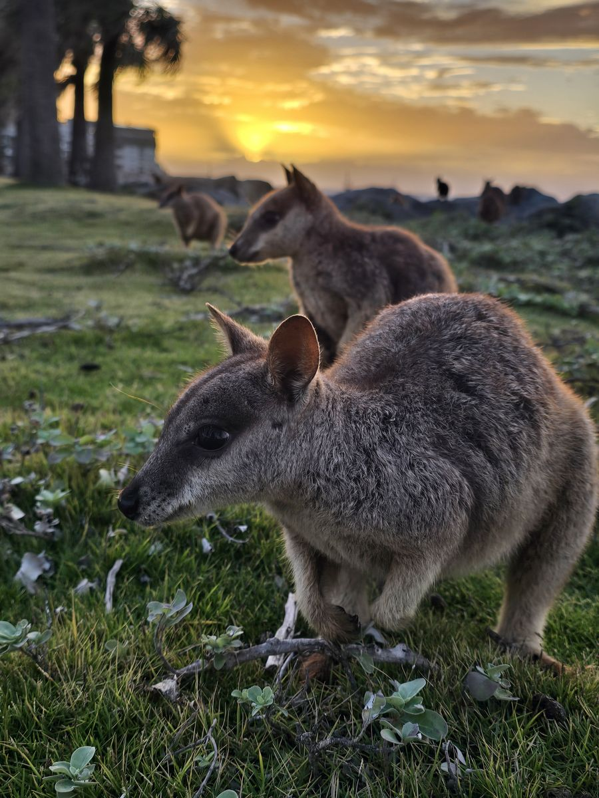
More rail strikes, so more buses. The plan was an early ferry to Townsville, the train to Tully and a taxi to Mission Beach, staying at the Rainforest Motel.
Rich to update: how the journey actually went.
Day 4 · 15 MayThe rain day at Mission Beach
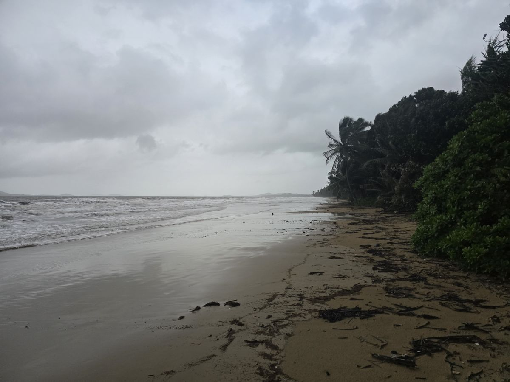
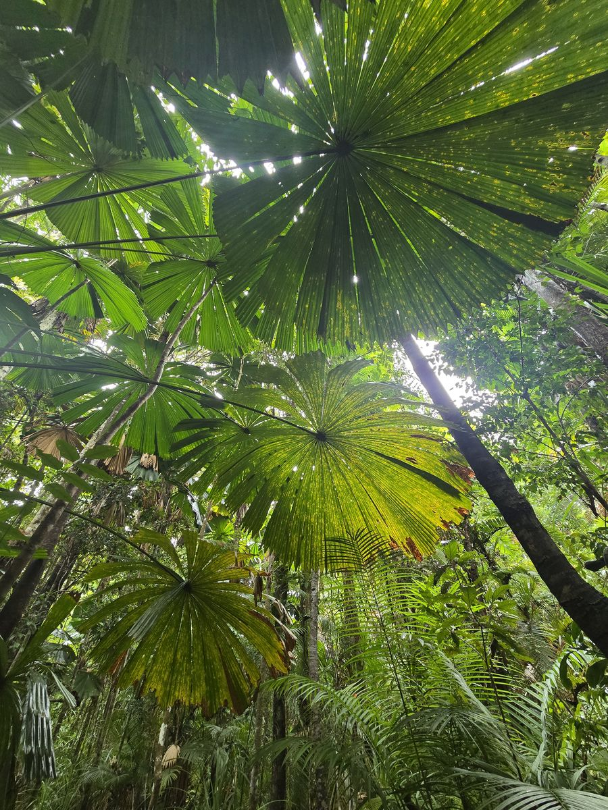
The snorkelling trip to Beaver Reef and Dunk Island was cancelled because of the weather. Even the ferry stopped. We had a lovely morning with rock-wallabies at sunrise, then it poured all morning. When it eased, we took a taxi to the rainforest and did two laps looking for cassowaries. None for us, but we did get soaked. Another taxi home and a nice evening meal finished a funny, unplanned day.
Day 5 · 16 MayTully River rafting, then Cairns
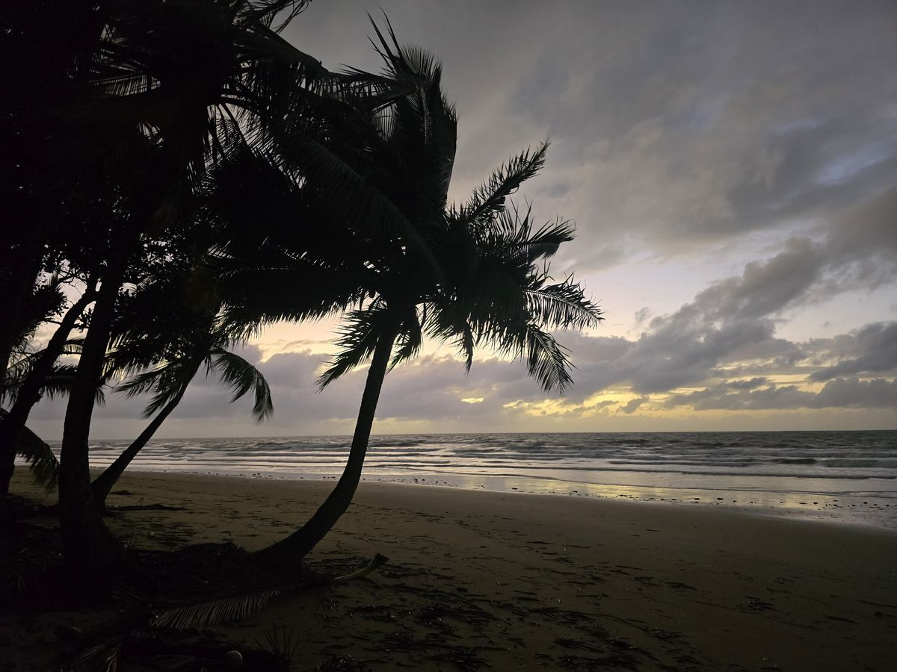
After two days of rain we thought the rafting would be off, and we were surprised it went ahead. First, a 3-hour beach walk in blazing sun, then check-out and a great breakfast before the bus to Tully. We met everyone after lunch and went up the hill to the river.
The river was so high that the normal grade 4 had turned into grade 6, so we had to get in a few waterfalls further down than normal. We had an ace 3 hours paddling, falling in and seeing the views. I managed to get us a lift to Cairns via the pub, which turned out perfectly. The Abbott Boutique Hotel was really nice when we finally got there at 9:30pm.
Day 6 · 17 MayFitzroy Island and Green Island
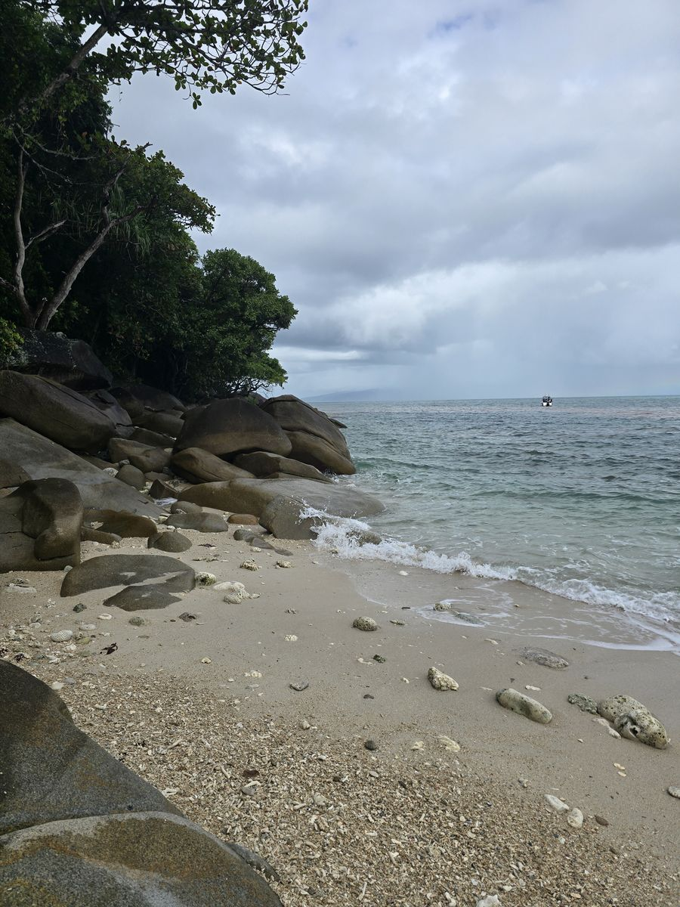
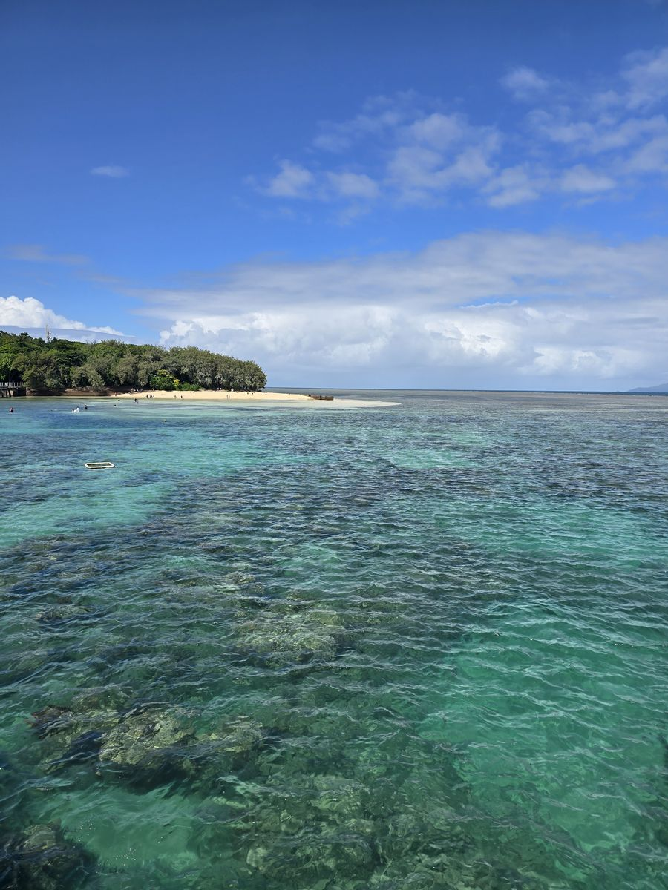
We walked to the harbour in the rain for the ferry to Fitzroy Island with Great Adventures. After an hour's crossing in the rain, the water was murky with an algae bloom. We walked to the best beach for turtles, but you couldn't see past your hand at arm's length. A second beach was the same.
The second ferry took us to Green Island. By then the tide was going out, the sun came out and the water cleared. Green Island was far more scenic, with sandy beaches all the way round. A lifeguard pointed out two spots far out near a buoy, nowhere near anyone else. We found a turtle near some coral quite quickly, and I saw a black-tip reef shark about 10 feet away and a couple of rays. Mission accomplished. We walked right round the island, had another swim and took the ferry back. Vietnamese food for dinner.
Tip: ask the lifeguard on Green Island where the turtles are.
Day 7 · 18 MayKuranda, Skyrail and crocodiles
A split tour with Down Under Tours. It started with the scenic railway up the old mine line, which ran late but was very chilled. We had to power round Kuranda village to make the Skyrail back down the mountain, then a coach to the afternoon crocodile park (Hartley's, in the plan). I expected that part to be poor, but it was really good. We slipped off during a croc attack show, had most of the park to ourselves and got to hand-feed kangaroos and wallabies.
Day 8 · 19 MayDiving the reef on Silverswift
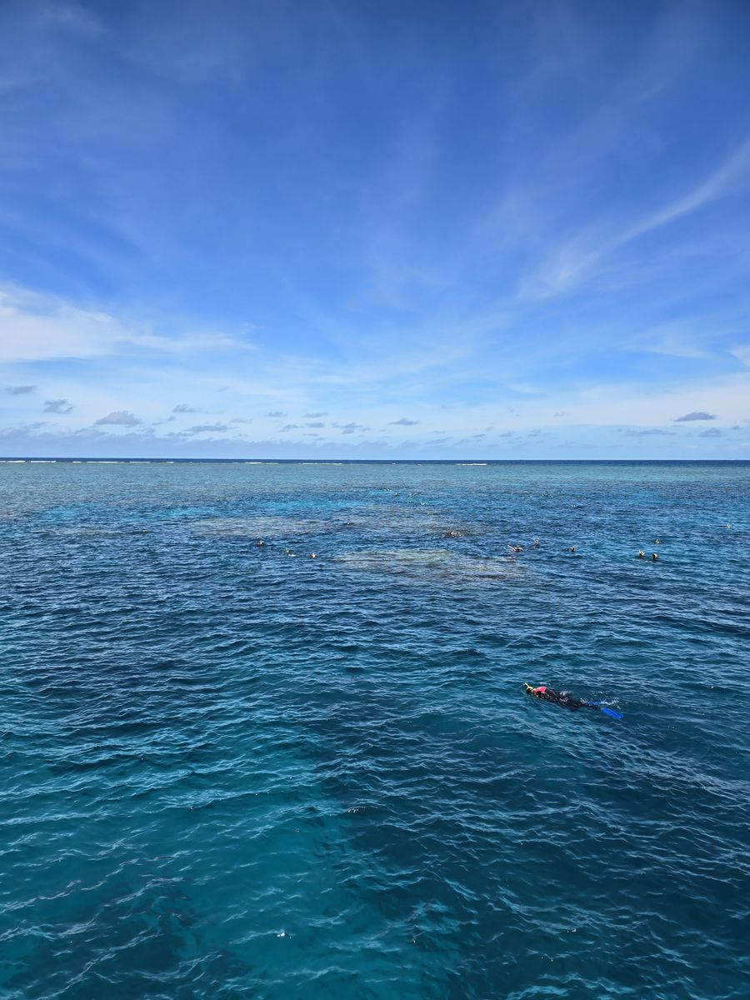
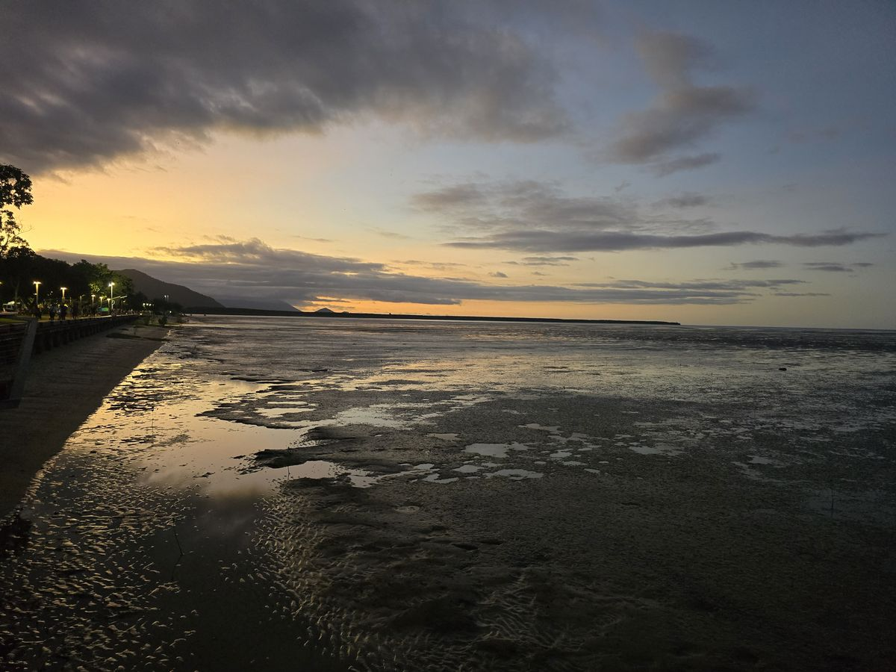
We took the Silverswift catamaran out to the Great Barrier Reef. I did 3 dives of about 40 minutes each and saw all sorts, including a huge loggerhead turtle, some sharks and rays. My travel companion did 2 introductory dives, and we both got some snorkelling in too. We couldn't decide between burgers and tacos, so we had both.
Day 9 · 20 MayCanyoning, then Port Douglas
A lovely breakfast, packed up, then a canyoning day at Crystal Cascades: lots of jumps into the water, climbing over rocks, sliding down waterfalls and a bit of abseiling. Great fun. Then a 1.5-hour Uber to Port Douglas. (The plan had a bus, and the Wildlife Habitat that afternoon. I moved the Habitat to the next day.)
Day 10 · 21 MayWildlife Habitat, Four Mile Beach and a sunset sail
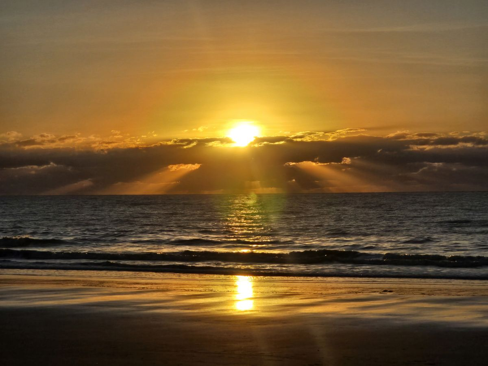
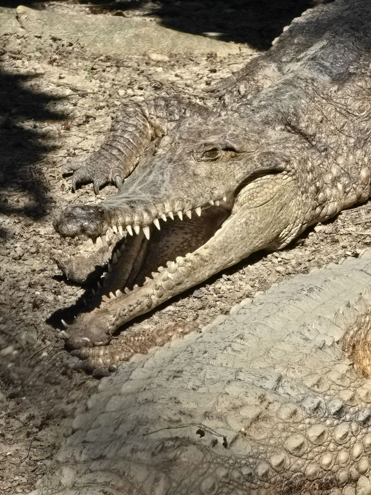
Up early for sunrise on the beach, which was rather nice. Breakfast in town, then an Uber to the Wildlife Habitat. We spent a few hours wandering round, meeting the animals and listening to the keeper talks, then walked back to the motel along Four Mile Beach in the sunshine. That earned a beer.
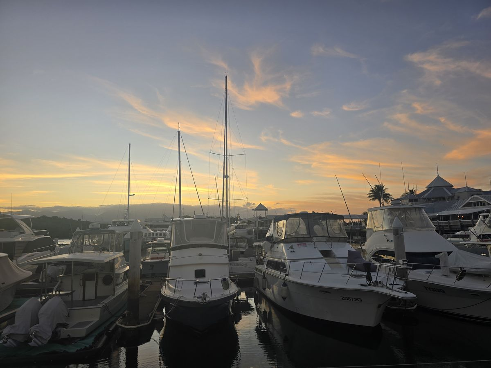
We were relaxing at the motel when the sunset sail (Indigo) phoned to ask where we were. I'd got the time wrong. We hurried there, made it 2 minutes late and set sail straight away. A couple of hours with beers watching the sunset was good. Another beer at a bar to watch the wild pink sky afterwards, then steak on the way home. Great day.
Tip: double-check your sailing time.
Day 11 · 22 MayDaintree Rainforest and Mossman Gorge
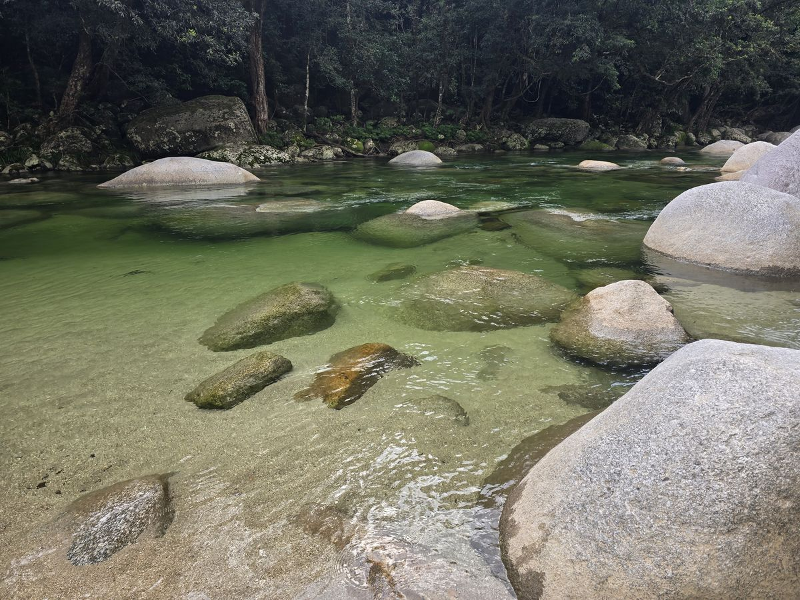
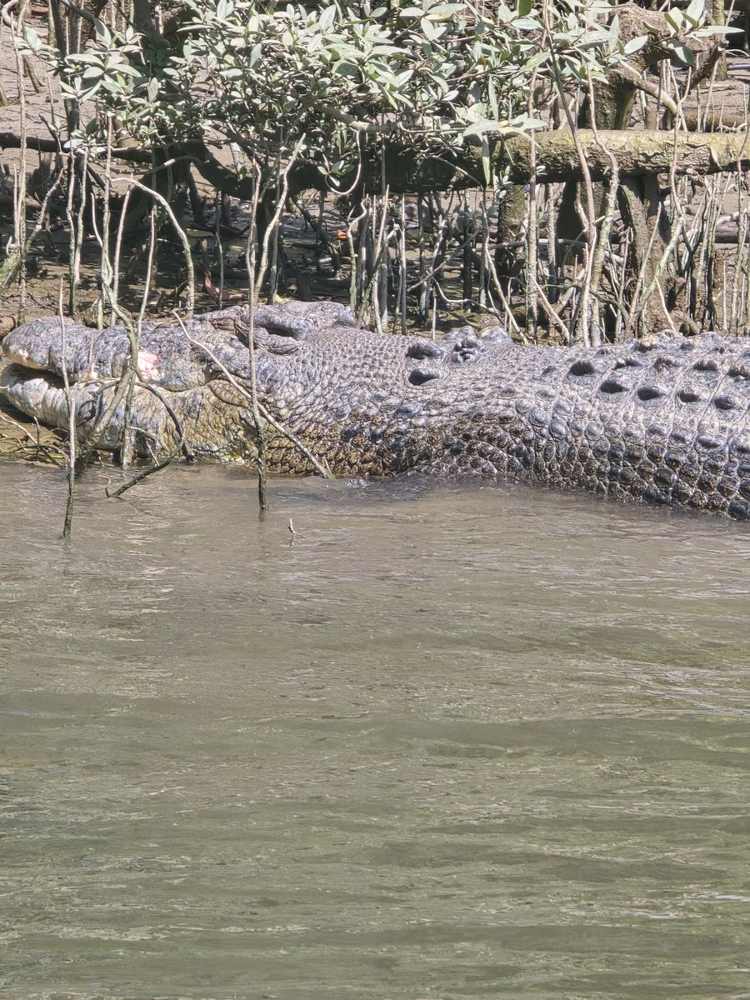
Tony's Tropical Tours picked us up at the motel. The same guide stayed with us all day, and he was great. First Mossman Gorge, with a short walk to see the swimming area and river; swimming was closed after the recent rain, but it was chilly anyway. A river trip spotting crocodiles went far better than expected: 6 close encounters, all wild. Then a few scenic stops, a walk through the rainforest, on to Cape Tribulation, and ice cream on the way home.
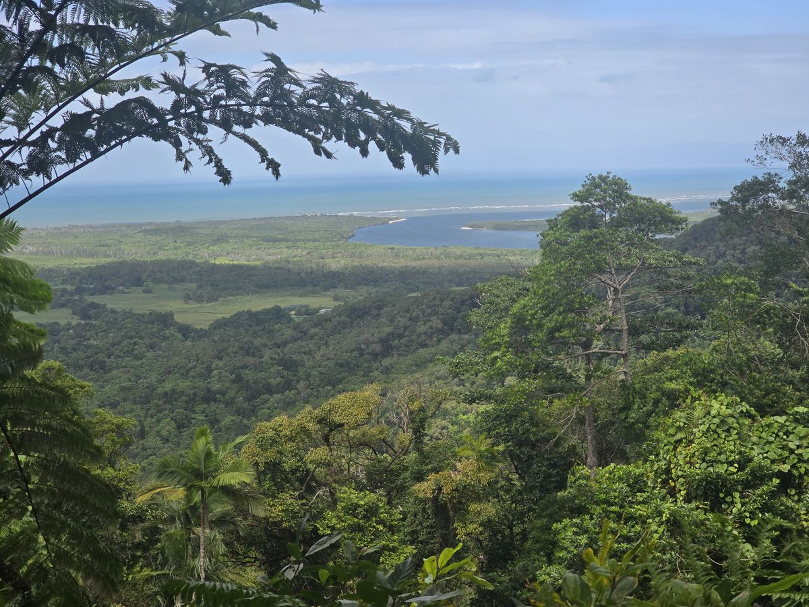
My verdict: the tour was OK, and I was a bit disappointed with the rainforest overall, but the guide and the other stops made up for it.
Day 12 · 23 MayATV buggies
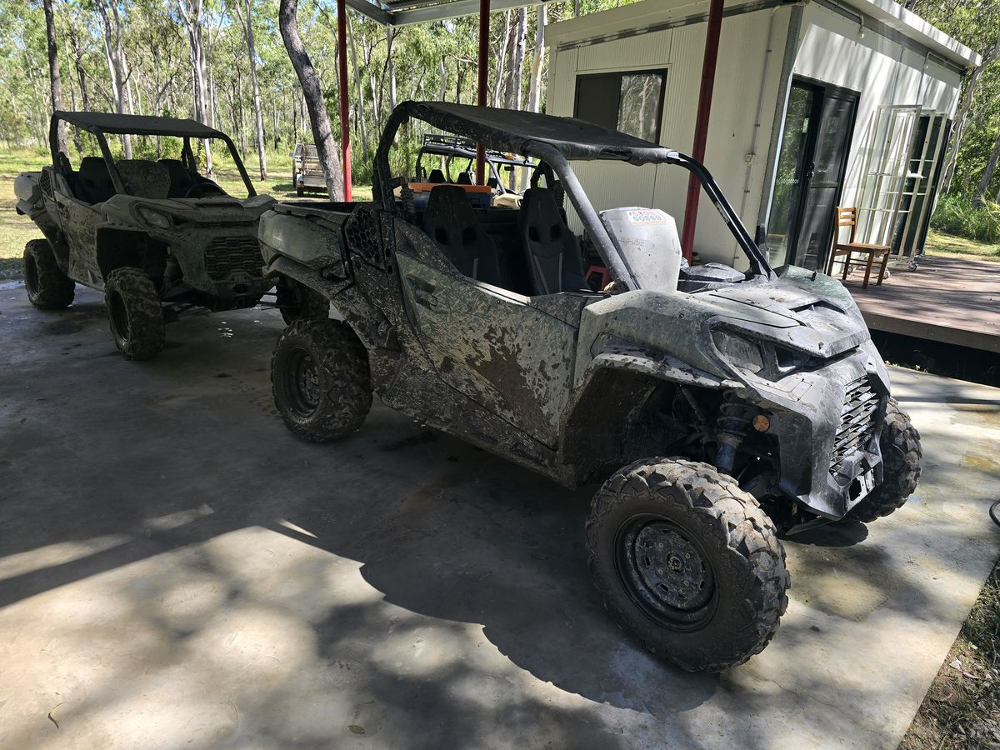
We'd booked the ATV Adventure Co tour ages ago. The owner phoned to say we were the only ones booked, but he'd still do the 1.5-hour round trip to pick us up. So we had a VIP day: 300 acres in Can-Am buggies, and we got to go on all the hard bits. Huge puddles, down cliffs and through rivers. At one point we got stuck and had to watch out for snakes while we dragged our way out. My travel companion had a go at driving too and really enjoyed it. Fun.
In the evening there was a music festival in town. We didn't stay up late.
Day 13 · 24 MaySilversonic outer reef trip
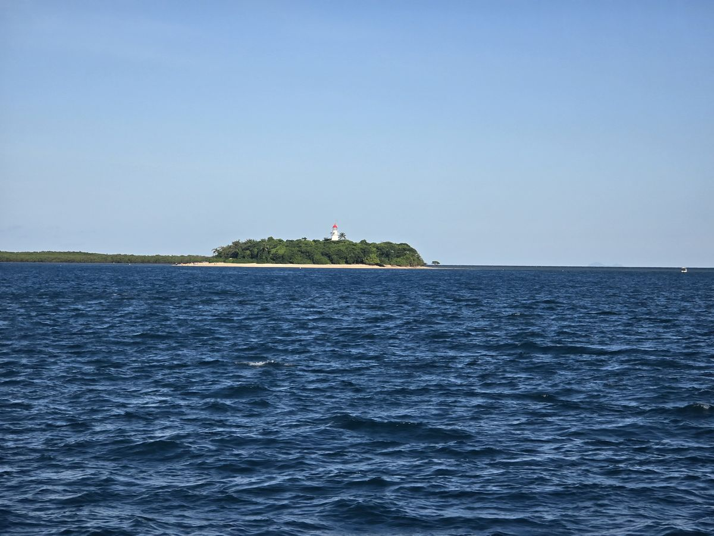
The plan had the Silversonic trip to the Agincourt Reefs, with 2–3 dives.
Rich to update: how the day went and your verdict.
Day 14 · 25 MayPort Douglas to Cairns, fly to Sydney
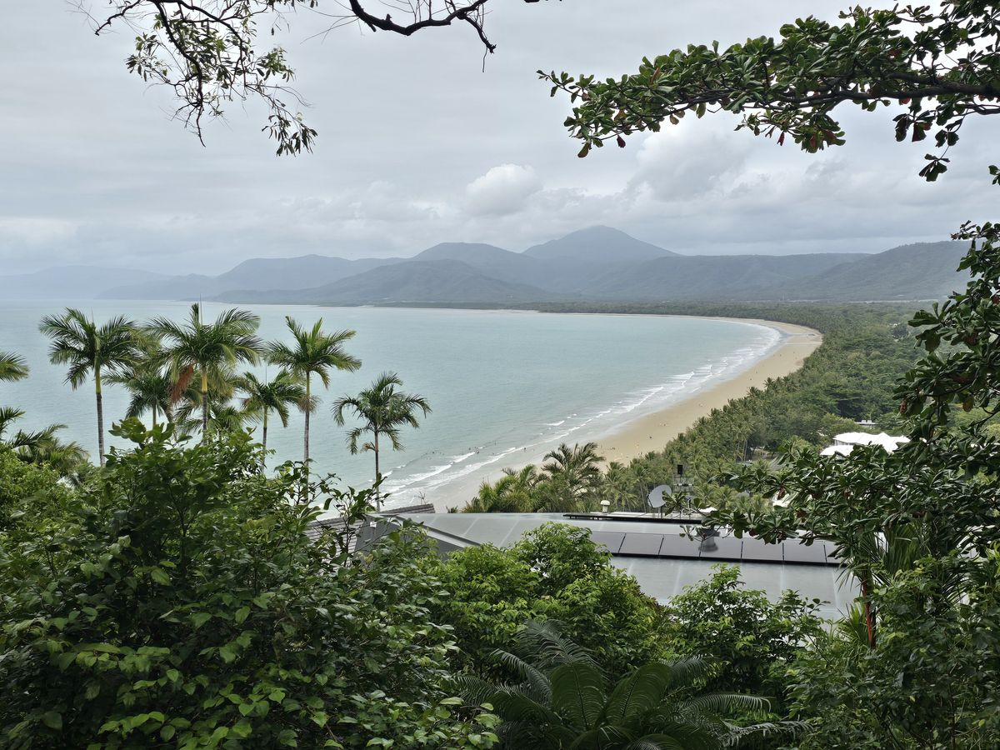
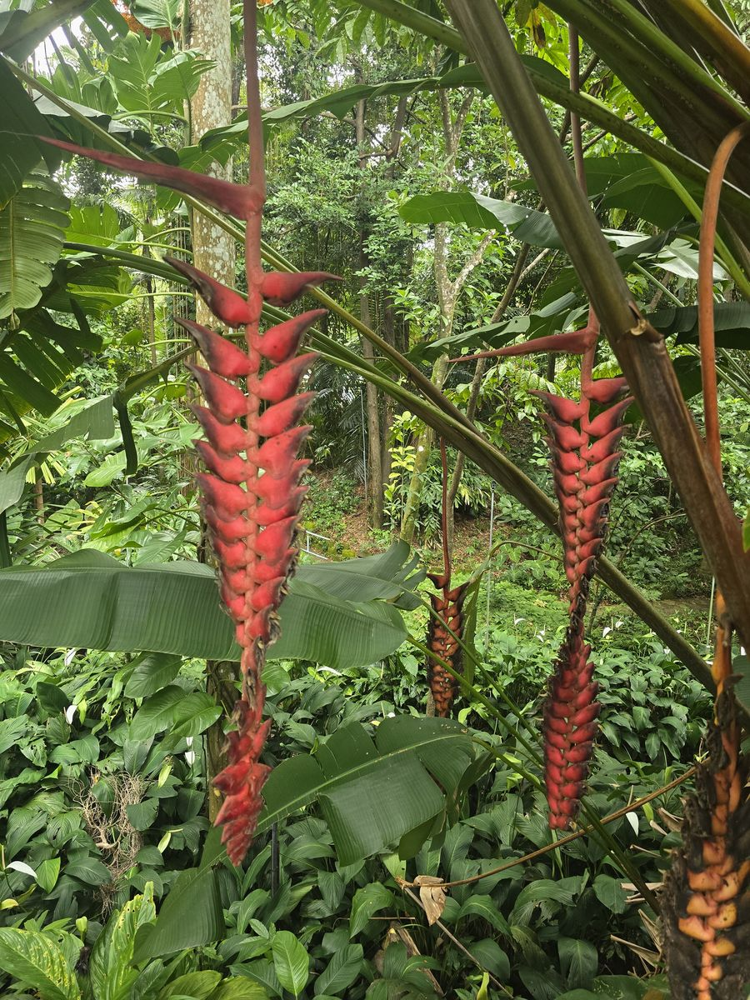
Up early for sunrise, but it was cloudy. A really good breakfast, then we checked out, stored the bags and went for a hike, with a pint on the beach afterwards. We'd booked an Uber to the Skyswing, but they shut it early, so we persuaded the driver to take us to the airport instead. A quick bag drop, then with limited time we went to some botanical gardens, which were really nice. Then back for the evening flight to Sydney.
Tip: check the Skyswing is still running before you go.
Weather plan B
- Dunk Island and Beaver Reef (15 May): cancelled by the weather, and the ferry stopped too. Plan B was a taxi to the rainforest to look for cassowaries in the rain. We got soaked and saw none.
- Tully River rafting (16 May): it still ran after two days of rain. The river was much higher than normal (grade 6 instead of grade 4), so we got in further down. Expect a rougher ride after rain.
- Fitzroy Island (17 May): rain and an algae bloom made the water too murky to see anything. We moved on to Green Island, where the sun came out and the water cleared.
- Mossman Gorge (22 May): swimming was closed after rain. We just did the short walk.
- Rich to update: what would you swap in if the reef or diving days are called off?
Do this / skip this
Do this
- Green Island, and ask the lifeguard where the turtles are. Turtle, reef shark and rays.
- Diving the reef on Silverswift. 3 dives, a huge loggerhead turtle, sharks and rays. Intro dives if you're not certified.
- Tully River rafting. Ace, and it still ran after heavy rain.
- Canyoning at Crystal Cascades. Great fun.
- The Kuranda split tour. The crocodile park in the afternoon was much better than I expected.
- The Indigo sunset sail. Beers and a great sunset.
- ATV Adventure Co. Fun, and they still ran it for just the two of us.
- Rock-wallabies at sunrise or dusk.
- Wildlife Habitat in Port Douglas, then walk back along Four Mile Beach.
Do differently
- Leave slack around the trains. Strikes cost me 3 hours on 12 May and put us on buses on 14 May.
- Check which ferry terminal you need before booking a taxi in Townsville.
- Pack so you can walk from the Magnetic Island ferry with your bags.
- Fitzroy Island: if the water's murky, go straight on to Green Island.
- Daintree: the tour was only OK and the rainforest disappointed me. The guide and the crocodile river trip made up for it.
- Double-check sailing and activity times. I nearly missed the sunset sail, and the Skyswing shut early.
Skip
- Rich to update: anything you'd skip here?
Where I stayed
Prices are what I paid for the room, shared between two of us, so the per-person cost is half. I booked these on Booking.com.
| Nights | Place | Paid (AUD) | What I thought | |
|---|---|---|---|---|
| 12–13 May (2 nights) | Vintage Coral Green, Magnetic Island (one-bed, a vintage caravan) | A$226.80 total (A$113.40 each), plus a cash surcharge on arrival | Nice | Booking.com (link coming) |
| 14–15 May (2 nights) | Rainforest Motel, Mission Beach (double with patio) | A$295.20 total (A$147.60 each) | Rich to update | Booking.com (link coming) |
| 16–19 May (4 nights) | The Abbott Boutique Hotel, Cairns | Rich to update (plan estimate A$150–250 for the room) | Really nice | Booking.com (link coming) |
| 20–24 May (5 nights) | Port Douglas Motel, Port Douglas | Rich to update (plan estimate about £60–90) | Rich to update | Booking.com (link coming) |
Rich to update: the cash surcharge at Vintage Coral Green, and the real prices for the Abbott and the Port Douglas Motel.
Rich to update: Tully rafting, Kuranda (Down Under Tours), canyoning, the Indigo sail, Tony's Tropical Tours and ATV Adventure Co: were these booked via Viator or direct? Their links will be added once that's confirmed.